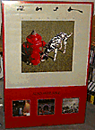

"album promo"
24" x 36"
Top 2/3 is Signals album cover, bottom 1/3 has smaller covers of Exit...
Stage Left, Moving Pictures and Permanent Waves on a red background, with
"also available" written underneath.
|

"digitized pictures"
36" x 24"
Light green background with the "digitized" pictures of the band from the
Signals album in the center, "Anthem" written at the bottom.
|

"large album cover"
37" x 56"
Close-up of the dog and hydrant from the Signals album cover, surrounded by a
light green background. Rush is written at the top in Signals script, and
"Signals" at the bottom in black block letters. Surrounded by a white border.
|

"euro tour '83"
24" x 34"
Top half is from A Farewell To Kings, bottom half is from Moving Pictures. The
man w/star is in the center with "Rush" written in Hemispheres script, and
"European Tour '83" in blue block letters at the top.
|